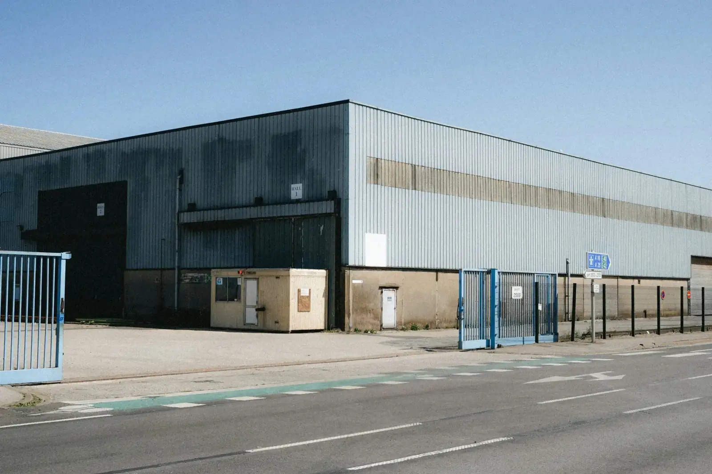

Business refinance · Newcastle-based, Australia-wide
Business loan refinancing. $0 broker fee on standard refinances.
Refinancing a business loan means replacing term loans, equipment finance or an overdraft with a new facility on better terms. It pays when the rate saving beats the switching costs within the time you'll keep the loan. We're based in Newcastle and work Australia-wide.
Fees published below · Newcastle-based, working Australia-wide
- Rate gap, existing vs new loans
- 0.61 pts
- Itemised costs, $1m example
- $10,810
- Our fee, standard refinance
- $0
- Typical, property-secured
- 4 to 8 weeks
The rate gap compares small-business variable loans in August 2026. Costs are an illustrative example and timing is typical. Each lender sets its own fees and rules. Updated .
Jump to a section
Our broker fees · Payable at settlement only · No engagement fee
Streamline
$0
Standard purchases and refinances.
Structured
1.25%
Min $5,000 · several companies or trusts, SMSF (self-managed super fund), or lenders that aren't banks.
Specialist
1.75%
Past credit problems, development, private lenders.
A straightforward bank-to-bank refinance usually falls under Streamline; refinances involving several companies or trusts, an SMSF or a lender that isn't a bank fall under Structured. See the full fee schedule for worked examples and when each tier applies.
Will refinancing save you money? Run your numbers.
These are estimates and general information, not a quote, because rates and fees vary by lender.
Our itemised example totals $10,810. See the cost table.
Leave at $0 for a variable loan. See how break costs work.
On these numbers refinancing pays: costs are recovered in about 15 months and you're about $33,800 better off over the loan.
Single loan, principal and interest, monthly repayments. The new loan equals your current balance. The defaults are an illustration, not a quote or an offer.
Want a lender's real numbers on this?
Send us your facilities, balances and rates. We're taking early enquiries ahead of launch, and deal assessments open once our lender panel is confirmed. You'll get a written reply within two business days, with no obligation. General information until we've looked at your figures.
Refinancing against property? Check what it could secure with our LVR (loan-to-value ratio) check.
Thinking of refinancing a business loan?
Five short questions, about 2 minutes. Early enquiries get a written reply within two business days.
How it works

1
Tell us the deal
What you're refinancing, entity, timeframe, in five short steps with no login.
2
Assessment and lender shortlist
A written reply within two business days.
3
One broker to settlement
One point of contact end to end. Fees only at settlement.
What is business loan refinancing?
It means paying out one or more existing business debts with a new facility (a loan or credit line), usually from a different lender. The aim is a lower rate, one repayment instead of several, a better term, or less security.
Most business debts can be refinanced, including:
- Term loans, with or without property as security.
- Equipment and vehicle finance: chattel mortgages, hire purchase and leases.
- Overdrafts and lines of credit.
- Trade and debtor finance.
- Several facilities rolled into one.
- Business debt that's secured on your home.
A typical case is a regional manufacturer (illustrative) with a bank term loan, a truck on hire purchase and an overdraft, all with different lenders. Each has its own rate, fees and repayment date. The question is whether one facility would cost less and be simpler to run. The numbers are in the worked example below.
How is it different from commercial property refinancing?
Business loan refinancing replaces debt the business owes, and the lender mainly looks at cash flow and trading history. Commercial property refinancing replaces a loan on a specific building, and the lender mainly looks at the property and its value or lease. The two overlap when business debt is secured on commercial property.
| Comparison | Business loan refinancing | Commercial property refinancing |
|---|---|---|
| What's being refinanced | Term loans, equipment finance, overdrafts, often several at once | A loan on one commercial property, usually a single facility |
| What the lender mainly assesses | Cash flow and trading history, shown in financial statements and bank statements | The property and its value, plus the lease or the owner-occupier's earnings |
| Security | Varies: property, equipment, a general security agreement over business assets, sometimes your home | The property itself, sometimes with other property |
| Valuation needed | Only if property is offered as security | Almost always, ordered by the lender |
| Typical LVR (loan-to-value ratio) cap | Applies only to property security. Equipment finance is set against the asset's value | Roughly 50% to 70% of valuation, depending on property type |
| Rate relative to the other | Tends to be higher when unsecured, lower when property-secured | Usually lower than unsecured business debt, because the property is strong security |
| Typical timeline | 1 to 3 weeks if unsecured or equipment-only, 4 to 8 weeks with property security | 2 to 8 weeks |
The LVR is the loan as a percentage of the security's value. If your business loans sit against a building you own, the property sets the cap and the cash flow still has to carry the repayments. Our borrowing guide shows how those two limits work. If you're replacing a loan on the building alone, see refinancing a commercial property loan.
When does refinancing a business loan pay?
It pays when the yearly saving beats the one-off switching costs within the time you'll realistically keep the loan. A 0.61-point gap on $1,000,000 is about $6,100 a year, so $10,810 of costs takes just under two years to recover on rate alone.
The gap comes from RBA (Reserve Bank of Australia) data, table F7. In August 2026, existing variable-rate small-business loans averaged 7.42%. New variable loans written that month averaged 6.81%. That's 0.61 percentage points, and on $1,000,000 it's about $6,100 a year in extra interest for staying put.
Those figures predate the rate rises of 30 September and 3 November 2026, and the cash rate is now 4.85%. Lenders set their own rates, so check what yours charges today, and run your own numbers in the refinance calculator above. Our quarterly lending conditions data tracks the averages. Source: RBA statistical table F7, August 2026. The gap and the dollar figure are Lambton Capital calculations.
Refinancing tends to pay at these moments:
- Your rate no longer reflects the risk. The business is stronger than when you borrowed, but you're still paying the old margin.
- Several facilities have sprawled, each with its own rate, fees and repayment date.
- A fixed term or facility is ending. Our page on what happens when a facility expires covers that.
- Your lender's appetite has changed, for example it has tightened up on your industry.
- The security no longer matches the debt, such as a house still backing a loan the business could now carry on its own.
What does it cost to refinance a business loan?
On a $1,000,000 refinance, our illustrative switching costs come to $10,810 before any break costs. Lenders' fees vary, so treat these as example figures, not a quote.
| Cost | Example amount | Notes |
|---|---|---|
| Lender establishment fee | $5,000 | 0.5% of $1,000,000 |
| Valuation, if property is security | $2,800 | Not needed for unsecured or equipment-only loans |
| Lender's legal fees | $1,900 | Paid for the lender's documents and security |
| Discharge fees on three existing facilities | $1,050 | Charged by each outgoing lender |
| PPSR (Personal Property Securities Register) search and registration | About $60 | Where equipment or other personal property is security |
| Total | $10,810 | Before break costs and early repayment fees |
Two costs can come on top: break costs on a fixed rate and any early repayment fee on equipment finance. Both are covered below, and both can be larger than everything in the table.
Our own fee is $0 to you on a standard refinance with a mainstream bank, because the lender pays our commission. It's 1.25% (minimum $5,000) for trusts, several entities or non-bank lenders, and 1.75% for past credit problems or private lenders. It's payable at settlement only. The fee schedule shows when each tier applies.
What does consolidating three facilities look like in dollars?
A manufacturer paying $21,357 a month across three facilities could move to one $1,000,000 loan at an illustrative 7.40%. Over five years that's $19,990 a month, and about $51,000 less interest after $10,810 of costs. Stretch the term to seven years and the repayment falls further, but you pay about $84,800 more interest than on the five-year term.
This is an illustration, not a client. Here's what the business owes today.
| Existing facility | Balance | Rate | Time left | Monthly repayment |
|---|---|---|---|---|
| Term loan | $700,000 | 8.60% | 5 years | $14,395 |
| Equipment finance | $180,000 | 10.40% | 3 years | $5,842 |
| Overdraft, drawn (interest only) | $120,000 | 11.20% | Ongoing | $1,120 |
| Total | $1,000,000 | $21,357 |
The refinance assumes property security and a single $1,000,000 loan at 7.40%. That rate is an assumption for the example, not a quote. The $10,810 of costs is paid in cash, not added to the loan.
| New loan option | 5-year term | 7-year term |
|---|---|---|
| Loan amount and illustrative rate | $1,000,000 at 7.40% | $1,000,000 at 7.40% |
| Monthly repayment | $19,990 | $15,289 |
| Change from $21,357 a month today | About $1,367 less | About $6,068 less |
| Interest compared with keeping the old facilities for five years (overdraft left drawn) | About $61,800 less, or about $51,000 less after the $10,810 costs | Not compared, because the old loans would end sooner |
| Total interest compared with the 5-year option | Baseline | About $84,800 more |
The seven-year option frees up $4,701 a month compared with the five-year one. It costs about $84,800 more in total interest. That's the trade-off, and it's a real one: lower repayments buy breathing room, and you pay for it.
We'd only stretch the term when cash flow genuinely needs it. If the business can carry the five-year repayment, take the five. If what you need is short-term cash rather than a lower rate, working capital finance is usually the better fit. And test the rate before you rely on any of this, because a higher real quote shrinks the saving.
Want this run on your numbers?
Send us your facilities, balances and rates. We're taking early enquiries ahead of launch, and deal assessments open once our lender panel is confirmed. You'll get a written reply within two business days, with no obligation. General information until we've looked at your figures.
What are break costs on a fixed-rate business loan?
Break costs apply when you leave a fixed rate early and wholesale rates have fallen since you fixed. The lender charges roughly the rate difference, times the balance, times the years left. Formulas vary by lender and many are discounted.
Take $800,000 fixed with two years to run. If wholesale rates are 1.0 point lower than when you fixed, the break cost is roughly 1.0% × $800,000 × 2 years, or $16,000. That's an illustration. Your lender's own formula decides the real number.
Rates have risen through 2026, so many fixed loans currently have little or no break cost. Don't count on it. Ask your lender for the figure in writing before you decide, because it changes with market rates.
Variable loans usually have no break cost. Some equipment finance has early payout fees or asks you to pay out the balloon, which is the next section.
What's different about refinancing equipment and vehicle finance?
A chattel mortgage, hire purchase or lease is secured on the asset and registered on the PPSR. So refinancing means paying out the old contract and discharging that registration.
Check the early termination fees on the old contract, and whether you get a rebate of unearned interest (interest charged for time you won't use). Both change the real cost of leaving.
A balloon is a lump sum due at the end of the term. Refinancing a balloon when the term ends is common. Extending the loan past the asset's useful life is the trap, because you'd still be paying for something worth very little.
Often it's cheaper to leave a near-finished equipment contract alone and refinance the rest. In the example above, we'd price the version that leaves the equipment finance where it is. More on the asset side is on our equipment and asset finance page.
Can you refinance a business tax debt?
Sometimes. Some lenders, mainly non-bank lenders, will refinance a debt to the ATO (Australian Taxation Office) into a secured loan. Banks are more cautious.
Compare it with the ATO's own payment plan before you decide. Overdue amounts attract general interest charge, which the ATO sets each quarter. Line that rate up against the full cost of a new loan, fees included.
If tax debt is one of several debts, our commercial debt restructure page explains how lenders look at the whole picture.
Here's the honest limit. If the business can't service the debt, refinancing just moves the problem. In that case we wouldn't lodge an application, and the Small Business Debt Helpline run by Financial Counselling Australia is a free place to start.
What do lenders need to refinance a business loan?
Lenders want proof the business can carry the new loan, and proof of what's being replaced. Have these ready.
- ID for every director and guarantor
- Company and trust details, including the ABN (Australian Business Number) and the trust deed
- The last two years' financial statements and tax returns, or 6 to 12 months of business bank statements for low-doc lenders
- Current-year management accounts
- BAS (business activity statements) for the last four quarters
- An ATO portal statement
- Statements for every facility being refinanced, covering the last 6 to 12 months so the lender can see how you've kept up repayments
- An asset list and your equipment finance contracts
- The lease for your trading premises
- Details of any property offered as security, including the rates notice and current mortgage statements
- Aged debtors and creditors reports, if they apply to your business
Missing a few items? Send what you have and we'll tell you what's still needed.
How long does a business loan refinance take?
Typically 4 to 8 weeks when property is the security, and often 1 to 3 weeks for an unsecured or equipment-only refinance. These are typical ranges, not promises. Each lender sets its own pace.
| Stage | Typical time |
|---|---|
| Gathering documents | 1 to 2 weeks |
| Lender assessment and credit approval | 1 to 3 weeks |
| Valuation, if property is security | 1 to 2 weeks, running alongside assessment |
| Documents, discharge and settlement | 1 to 2 weeks |
Start 3 to 6 months before a fixed term or facility expires. That leaves room for a valuation that comes in low, or a document request that takes longer than you expected.

When shouldn't you refinance a business loan?
Don't refinance when the saving doesn't clear the costs, or when the only thing improving is the monthly repayment. These are the cases where we'd tell you to wait or stay put.
- The break costs are bigger than the saving.
- There's under 12 to 18 months left on the loan.
- The saving comes only from stretching the term, as in the seven-year example.
- You'd lose a feature you use, such as redraw, an offset account or a revolving facility.
- Your financials are about to improve. Waiting for next year's accounts can change what lenders offer.
- The business is in arrears or has an unresolved ATO issue. Fix it first, or go to a specialist.
- The new deal needs a personal guarantee or home security you don't currently give.
Before any of that, ask your current lender to reprice. A retention reprice (a lower rate offered to keep you) costs nothing to ask for and gives you a benchmark. If they match a competing offer, you skip the switching costs altogether.
What happens to personal guarantees and security?
A refinance is a chance to renegotiate both. Ask for a guarantor to be released or home security to be removed. Expect the new lender to ask for more if the numbers are thin.
A director's personal guarantee may back the old loan. If the business and property are strong, a new lender may accept less, such as a limited guarantee. It may also want a guarantee your current lender never asked for. Treat release as something to negotiate, not assume.
Home security is common. RBA table D14 (August 2026) puts about 49% of small-business lending as secured by residential property. It's still your home, so speak to your solicitor before you sign a guarantee or a new security.
Frequently asked questions
Can I refinance a business loan with the same bank?
Yes. Ask for a reprice first. Some banks will cut the rate to keep you, others only move if you show them a competing offer. Either way, get the new rate and any fees in writing and compare them with moving.
Can I refinance a business loan secured on my house?
Yes. You can move it to a new lender. Sometimes you can release the house from security altogether, if the business and its other assets can carry the loan. Your solicitor should check how the security is structured before you sign.
Can I consolidate an overdraft, equipment finance and a term loan?
Yes, that's the three-facility example above. The usual snag is the equipment contract, where early payout fees or a balloon can cancel the saving, so we price it both ways.
Can I refinance a business loan without property as security?
Yes. Many refinances rely on business assets and cash flow instead. They're often quicker, at 1 to 3 weeks, but tend to be priced higher than property-backed loans, so the saving is harder to find.
Will refinancing affect my credit file?
A little. Each application is recorded as a credit enquiry, and several applications in a short period can count against you. That's one reason to settle on a shortlist before anything is lodged, rather than applying to lenders one after another.
Is business loan interest tax deductible?
Generally yes, when the borrowing is for business purposes. It depends on what the money was used for, so check with your accountant, especially if you're consolidating loans that funded different things.
How much does it cost to refinance a $1,000,000 business loan?
Our itemised example comes to $10,810 before any break costs. The cost table above shows each line. Real fees vary by lender, so ask for a written breakdown.
Example lenders
Examples of lenders commonly available to commercial brokers through an aggregator panel. Our own accreditations (approvals to arrange loans with each lender) are in progress, so these are examples, not confirmed lenders.
Replacing a loan on a building rather than business debt? See commercial property loan refinance and commercial property finance. Need new funding rather than a refinance? See business finance.
Now taking early enquiries. Deal assessments open once our lender panel is confirmed. Early enquiries are contacted first. Written reply within two business days, no obligation, and we don't pass your details to anyone without asking you.